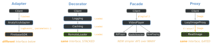

architecture · folio
In one line: Creational patterns decide how an object comes to exist (Singleton, Factory Method, Abstract Factory, Builder). The four “wrappers” are told apart by intent, not shape: Adapter changes the interface, Decorator keeps it and adds behaviour, Facade simplifies a whole subsystem, Proxy keeps it and controls access.
Download PDF Print view LaTeX source


| Pattern | Interface | Intent | Wraps | iOS example |
|---|---|---|---|---|
| Adapter | changes to one a client already expects | compatibility | ONE adaptee; adds no features | extension SDK: MyProtocol; callback API → async via withCheckedContinuation |
| Decorator | same | augmentation | ONE, handed in by client; stackable | Logging(Caching(Remote())); SwiftUI ViewModifier, .padding().border() |
| Facade | new, simpler (invented) | simplification | a SUBSYSTEM of many classes | VideoPlayer over AVFoundation; URLSession over the network stack |
| Proxy | same | access control | ONE subject, often created/owned by the proxy | lazy var; NSXPCConnection.remoteObjectProxy; auth-gated client; image cache |
Decide in two questions. (1) Same interface as the wrapped object? No → dictated by an existing client? Adapter · invented to hide many classes? Facade. (2) Same → adds behaviour, stackable? Decorator · decides whether / when / how you reach the real object? Proxy.
Proxy — “Very Private Rooms Cache” Surrogate with the subject’s interface that controls access.
Virtual: defer expensive creation (lazy var = built-in virtual proxy; not thread-safe) ·
Protection: check auth, then forward ·
Remote: local stand-in for another process/server (XPC, API stubs) ·
Caching / smart reference: memoise, ref-count.
Decorator Holds one object of the same protocol, forwards every call, adds behaviour before/after; wrappers stack, order chosen at runtime.
Beats subclassing: N optional features → 2N subclasses (log+cache+retry = 8); decorators = N types, composed (OCP).
Cost: forwards the whole interface (keep it small, ISP). SwiftUI: .padding().background() ≠ .background().padding().
Facade vs Adapter Facade does not lock the subsystem away (you may bypass it) and is one-way — the subsystem does not know it (a Mediator’s peers talk back). Adapter = one type made to fit an existing interface.
Singleton Purpose: exactly one instance + global access point.
static let shared = X() + private init(): static stored properties are initialised lazily on first access, once, thread-safely (swift_once). Only creation is safe — mutable state still needs an actor/lock.
Downsides: global mutable state · hidden dependencies (absent from every init) · hard to test: can’t swap a fake, state leaks between tests, order-dependent · tight coupling (DIP) · app-long lifetime · SRP.
Fix: depend on a protocol, inject it; .shared only as default: init(api: API = LiveAPI.shared).
URLSession.shared/FileManager.default are shared instances, not enforced singletons.
Remember Adapter changes · Decorator decorates · Facade fronts many · Proxy protects. Hooks: plug adapter · gift-wrap layers · building front · bouncer. Factory: Method = one, Abstract = family.
Factory — three different things
Simple factory (not GoF): a function with a switch returning a concrete type.
Factory Method: base class declares a creation method, a subclass overrides it to decide ONE product; base code calls it. Inheritance. iOS: override class var layerClass to pick a UIView’s CALayer.
Abstract Factory: an object (protocol) with several make… methods for a FAMILY that must match: ThemeFactory (makeButton, makeLabel) as Light/Dark; Live vs Mock services. Composition: passed in.
Builder Solves telescoping initialisers (init(a), init(a,b), init(a,b,c,…)).
Builds one product step by step; setters return Self for chaining; build() validates. Director = holds a fixed recipe of steps.
Swift: default + named params usually replace it. URLComponents is a value-type builder; @resultBuilder is a compile-time DSL, related in spirit only.
Traps
- Proxy ≠ Decorator: Proxy controls access, one, often creates the subject; Decorator adds behaviour to what you hand it, stacked.
- Facade ≠ Adapter: invents a simpler API over many vs fits one to an existing API.
- A function returning an object is a simple factory, not Factory Method.
- “
static letmakes it thread-safe” — only its initialisation.